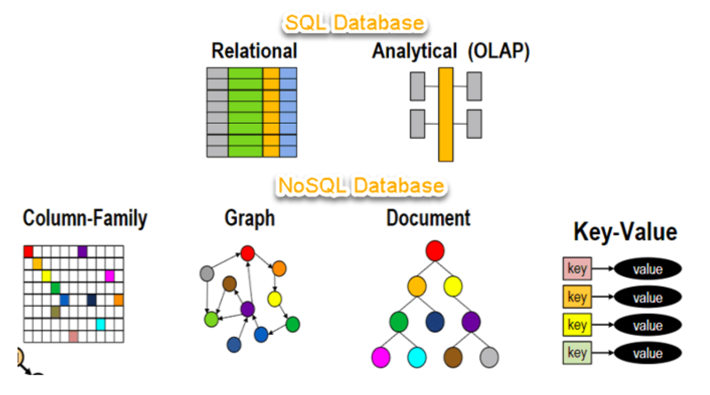
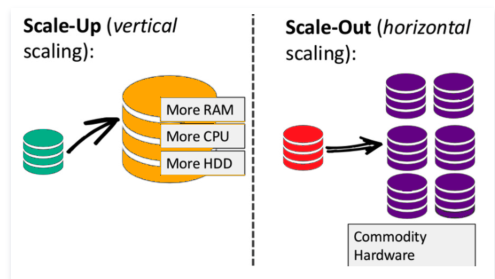
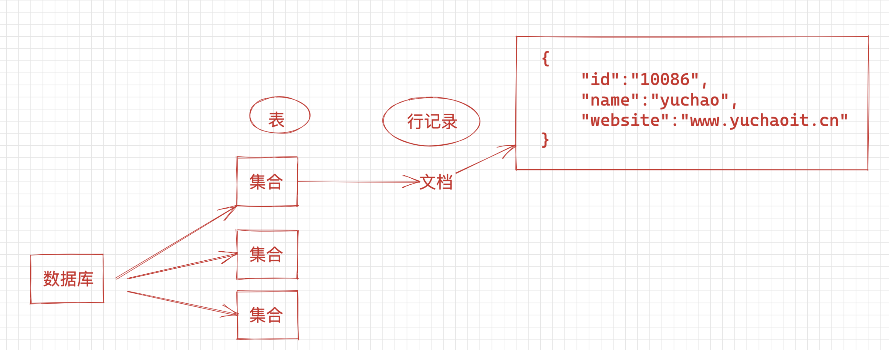
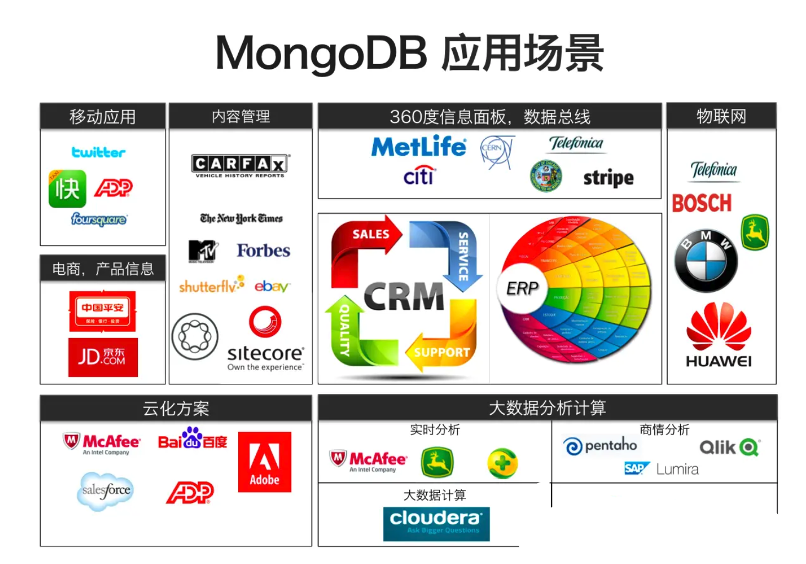
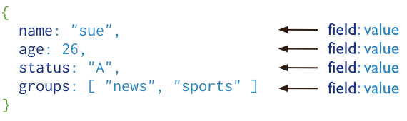
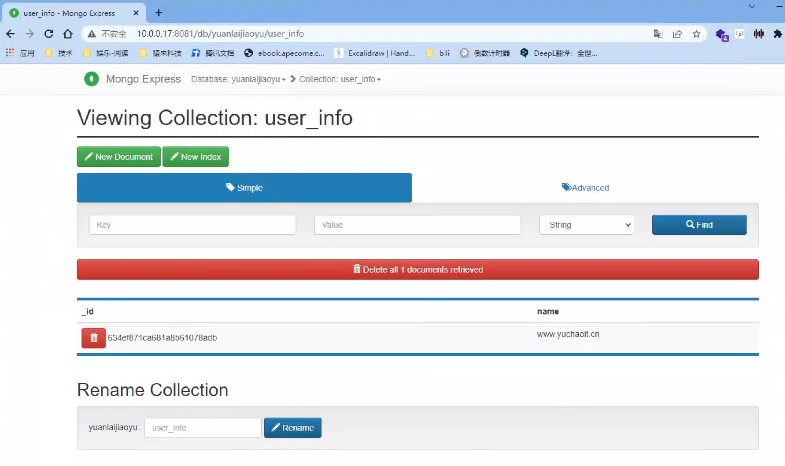

mongodb
什么是NoSQL？
NoSQL是一种非关系型DMS，不需要固定的架构，可以避免joins链接，并且易于扩展。NoSQL数据库用于具有庞大数据存储需求的分布式数据存储。
NoSQL用于大数据]和实时Web应用程序。例如，像Twitter，Facebook，Google这样的大型公司，每天可能产生TB级的用户数据。
NoSQL数据库代表“不仅仅是SQL”或“不是SQL”。虽然NoRELNoSQL会是一个更好的名词。Carl Strozz在1998年引入了NoSQL概念。
传统的RDBMS使用SQL语法来存储和查询数据。
相反，NoSQL数据库系统包含可存储结构化，半结构化，非结构化和多态数据的多种数据库技术。

为什么使用NoSQL？
NoSQL数据库的概念在处理大量数据的互联网巨头（例如Google，Facebook，Amazon等）中变得很流行。
使用RDBMS处理海量数据时，系统响应时间变慢。
为了解决此问题，当然可以通过升级现有硬件来“横向扩展”我们的系统。但这个成本很高。
这个问题的替代方案是在负载增加时将数据库负载分配到多个主机上。这种方法称为“横向扩展”。
纵向扩展、提升单机配置，抗住负载
横向扩展、分散负载到多机。

NoSQL数据库是非关系数据库，因此在设计时考虑到Web应用程序，比关系数据库更好地扩展。
什么是MongoDB
MongoDB是面向文档的NoSQL数据库，用于大量数据存储。MongoDB是一个在2000年代中期问世的数据库。属于NoSQL数据库的类别。
1.为什么学mongoDB
定义
MongoDB（来自于英文单词“Humongous”，中文含义为“庞大”）是可以应用于各种规模的企业、各个行业以及各类应用程序的开源数据库。
作为一个适用于敏捷开发的数据库，MongoDB的数据模式可以随着应用程序的发展而灵活地更新。
与此同时，它也为开发人员 提供了传统数据库的功能：二级索引，完整的查询系统以及严格一致性等等。
MongoDB能够使企业更加具有敏捷性和可扩展性，各种规模的企业都可以通过使用MongoDB来创建新的应用，提高与客户之间的工作效率，加快产品上市时间，以及降低企业成本。
特点
MongoDB是专为可扩展性，高性能和高可用性而设计的数据库。
它可以从单服务器部署扩展到大型、复杂的多数据中心架构。
利用内存计算的优势，MongoDB能够提供高性能的数据读写操作。
MongoDB的本地复制和自动故障转移功能使您的应用程序具有企业级的可靠性和操作灵活性。 • 模式自由，支持动态查询、完全索引，可轻易查询文档中内嵌的对象及数组。
• 面向集合存储，易存储对象类型的数据 , 包括文档内嵌对象及数组 。
• 高效的数据存储 , 支持二进制数据及大型对象 ( 如照片和视频 ) 。
• 支持复制和故障恢复；提供了主 - 从、主 - 主模式的数据复制及服务器之间的数据复制。
• 自动分片以支持云级别的伸缩性，支持水平的数据库集群，可动态添加额外的服务器。
使用场景
1、日志系统，查找起来灵活，导出方便。因为MongoDB的schema-less，所有格式灵活，不用为了各种格式不一样的信息专门设计统一的格式，极大的减少开发的工作。
2、存储监控数据，No schema 对开发人员来说，真的很方便，增加字段不用改表结构，而且学习成本极低。
3、使用MongoDB做了O2O快递应用，将送快递骑手、快递商家的信息（包含位置信息）存储在 MongoDB，然后通过 MongoDB 的地理位置查询，这样很方便的实现了查找附近的商家、骑手等功能，使得快递骑手能就近接单，目前在使用MongoDB 上没遇到啥大的问题，
4、官网的文档比较详细，很给力。
5、经常会听到类似『你这个场景 mysql 也能解决，没必要一定用 MongoDB』的声音，的确，并没有某个业务场景必须要使用 MongoDB才能解决，但使用 MongoDB 通常能让你以更低的成本解决问题（包括学习、开发、运维等成本），下面是 MongoDB 的主要特性，大家可以对照自己的业务需求看看，匹配的越多，用 MongoDB 就越合适。
| MongoDB 特性 | 优势 |
|---|---|
| 事务支持 | MongoDB 目前只支持单文档事务，需要复杂事务支持的场景暂时不适合 |
| 灵活的文档模型 | JSON 格式存储最接近真实对象模型，对开发者友好，方便快速开发迭代 |
| 高可用复制集 | 满足数据高可靠、服务高可用的需求，运维简单，故障自动切换 |
| 可扩展分片集群 | 海量数据存储，服务能力水平扩展 |
| 高性能 | mmapv1、wiredtiger、mongorocks（rocksdb）、in-memory 等多引擎支持满足各种场景需求 |
| 强大的索引支持 | 地理位置索引可用于构建 各种 O2O 应用、文本索引解决搜索的需求、TTL索引解决历史数据自动过期的需求 |
| Gridfs | 解决文件存储的需求 |
| aggregation & mapreduce | 解决数据分析场景需求，用户可以自己写查询语句或脚本，将请求都分发到 MongoDB 上完成 |
从目前阿里云 MongoDB 云数据库上的用户看，MongoDB 的应用已经渗透到各个领域，比如游戏、物流、电商、内容管理、社交、物联网、视频直播等，以下是几个实际的应用案例。
- 游戏场景，使用 MongoDB 存储游戏用户信息，用户的装备、积分等直接以内嵌文档的形式存储，方便查询、更新
- 物流场景，使用 MongoDB 存储订单信息，订单状态在运送过程中会不断更新，以 MongoDB 内嵌数组的形式来存储，一次查询就能将订单所有的变更读取出来。
- 社交场景，使用 MongoDB 存储存储用户信息，以及用户发表的朋友圈信息，通过地理位置索引实现附近的人、地点等功能
- 物联网场景，使用 MongoDB 存储所有接入的智能设备信息，以及设备汇报的日志信息，并对这些信息进行多维度的分析
- 视频直播，使用 MongoDB 存储用户信息、礼物信息等
- ……
是否选用mongodb的标准
| 应用特征 | Yes / No |
|---|---|
| 应用不需要事务及复杂 join 支持 | 必须 Yes |
| 新应用，需求会变，数据模型无法确定，想快速迭代开发 | ？ |
| 应用需要2000-3000以上的读写QPS（更高也可以） | ？ |
| 应用需要TB甚至 PB 级别数据存储 | ? |
| 应用发展迅速，需要能快速水平扩展 | ? |
| 应用要求存储的数据不丢失 | ? |
| 应用需要99.999%高可用 | ? |
| 应用需要大量的地理位置查询、文本查询 | ？ |
如果上述有1个 Yes，可以考虑 MongoDB，2个及以上的 Yes，选择 MongoDB 绝不会后悔。
2.MongoDB常用术语
下面是MongoDB中使用的一些常用术语
- _id – 这是每个MongoDB文档中必填的字段。_id字段表示MongoDB文档中的唯一值。
- _id字段类似于文档的主键。如果创建的新文档中没有_id字段，MongoDB将自动创建该字段。
- 集合 – 这是MongoDB文档的分组。
- 集合等效于在任何其他RDMS（例如Oracle或MS SQL）中创建的表。集合存在于单个数据库中。从介绍中可以看出，集合不强制执行任何结构。
- 游标 – 这是指向查询结果集的指针。客户可以遍历游标以检索结果。
- 数据库 – 这是像RDMS中那样的集合容器，其中是表的容器。每个数据库在文件系统上都有其自己的文件集。MongoDB服务器可以存储多个数据库。
- 文档 - MongoDB集合中的记录基本上称为文档。文档包含字段名称和值。
- 字段 - 文档中的名称/值对。一个文档具有零个或多个字段。字段类似于关系数据库中的列。
下图显示了带有键值对的字段的示例。如下的例子中，CustomerID和11是文档中定义的键值对之一。
MongoDB与RDBMS对比

下表将帮助您更容易理解Mongo中的一些概念：
| SQL术语/概念 | MongoDB术语/概念 | 解释/说明 |
|---|---|---|
| database | database | 数据库 |
| table | collection | 数据库表/集合 |
| row | document | 数据记录行/文档 |
| column | field | 数据字段/域 |
| index | index | 索引 |
| table joins | 表连接,MongoDB不支持 | |
| primary key | primary key | 主键,MongoDB自动将_id字段设置为主键 |

3.MongoDB简介
MongoDB 是由C++语言编写的，是一个基于分布式文件存储的开源数据库系统。
在高负载的情况下，添加更多的节点，可以保证服务器性能。
MongoDB 旨在为WEB应用提供可扩展的高性能数据存储解决方案。
MongoDB 将数据存储为一个文档，数据结构由键值(key=>value)对组成。
MongoDB 文档类似于 JSON 对象。字段值可以包含其他文档，数组及文档数组。

MongoDB 以一种叫做 BSON（二进制 JSON）的存储形式将数据作为文档存储。（对比mysql的行数据去理解）
具有相似结构的文档通常被整理成集合。
可以把这些集合看成类似于关系数据库中的表：
文档和行相似， 字段和列相似。
mongoDB数据格式
json
JSON(JavaScript Object Notation) 是一种轻量级的数据交换格式。
JSON采用完全独立于语言的文本格式，但是也使用了类似于C语言家族的习惯（包括C、 C++、 C#、 Java、JavaScript、 Perl、 Python等）。
这些特性使JSON成为理想的数据交换语言。 易于人阅读和编写，同时也易于机器解析和生成(一般用于提升网络传输速率)。JSON 的官方 MIME 类型是 application/json，文件扩展名是 .json。
MongoDB 使用JSON（JavaScript ObjectNotation）文档存储记录。
JSON简单说就是JavaScript中的对象和数组，通过对象和数组可以表示各种复杂的结构。
对象
对象在js中表示为“{}”括起来的内容，数据结构为 {key： value,key： value,…}的键值对的结构，在面向对象的语言中， key为对象的属性， value为对应的属性值，所以很容易理解，取值方法为 对象.key 获取属性值，这个属性值的类型可以是 数字、字符串、数组、 对象几种。
取值方式和所有语言中一样，使用key获取，字段值的类型可以是 数字、字符串、数组、对象几种。
bson
BSON是一种类JSON的一种二进制形式的存储格式，简称Binary JSON，它和JSON一样，支持内嵌的文档对象和数组对象，但是BSON有JSON没有的一些数据类型，如Date和BinData类型。
它的优点是灵活性高，但它的缺点是空间利用率不是很理想。
BSON有三个特点：轻量性、可遍历性、高效性。
对JSON来说，数据存储是无类型的，比如你要修改基本一个值，从9到10，由于从一个字符变成了两个，所以可能其后面的所有内容都需要往后移一位才可以。
而使用BSON，你可以指定这个列为数字列，那么无论数字从9长到10还是100，我们都只是在存储数字的那一位上进行修改，不会导致数据总长变大。当然，在MongoDB中，如果数字从整形增大到长整型，还是会导致数据总长变大的。
有时BSON相对JSON来说也并没有空间上的优势，比如对{“sex”:1}，在JSON的存储上 1只使用了一个字节，而如果用BSON，那就是至少4个字节
4.MongoDB 特点
- 高性能： Mongodb 提供高性能的数据持久性，尤其是支持嵌入式数据模型减少数据库系统上的 I/O操作，索引支持能快的查询，并且可以包括来嵌入式文档和数组中的键
- 丰富的语言查询： Mongodb 支持丰富的查询语言来支持读写操作（CRUD）以及数据汇总，文本搜索和地理空间索引
- 高可用性： Mongodb 的复制工具，成为副本集，提供自动故障转移和数据冗余
- 水平可扩展性： Mongodb 提供了可扩展性，作为其核心功能的一部分，分片是将数据分，在一组计算机上。
- 支持多种存储引擎： WiredTiger 存储引擎和、 MMAPv1存储引擎和 InMemory 存储引擎
MongoDB Server
是一个文档数据库，具有您需要的可扩展性和灵活性，丰富的查询和索引，
5.MongoDB安装部署
https://www.mongodb.com/docs/manual/ 文档
https://www.mongodb.com/download-center/community 下载
二进制tar包mongoDB部署详解
wget https://fastdl.mongodb.org/linux/mongodb-linux-x86_64-rhel70-4.0.28.tgz
yum install libcurl openssl -y
[root@www.yuchaoit.cn /opt]#tar -zxf mongodb-linux-x86_64-rhel70-4.0.28.tgz -C /opt/
cd /opt/
[root@www.yuchaoit.cn /opt]#
[root@www.yuchaoit.cn /opt]#ln -s /opt/mongodb-linux-x86_64-rhel70-4.0.28 /opt/mongodb
[root@www.yuchaoit.cn /opt]#ls -l
total 104272
lrwxrwxrwx 1 root root 39 Oct 1 23:44 mongodb -> /opt/mongodb-linux-x86_64-rhel70-4.0.28
drwxr-xr-x 3 root root 135 Oct 1 23:43 mongodb-linux-x86_64-rhel70-4.0.28
-rw-r--r-- 1 root root 106773511 Oct 1 23:40 mongodb-linux-x86_64-rhel70-4.0.28.tgz
[root@www.yuchaoit.cn /opt]#
[root@www.yuchaoit.cn /opt]#mkdir -p /opt/mongo_27017/{conf,log,pid}
[root@www.yuchaoit.cn /opt]#mkdir -p /data/mongo_27017
[root@www.yuchaoit.cn /opt]#
[root@www.yuchaoit.cn /opt]#
# mongodb配置文件是yaml格式，看https://www.mongodb.com/docs/v3.4/reference/configuration-options/资料
cat >/opt/mongo_27017/conf/mongodb.conf<<EOF
systemLog:
destination: file #Mongodb 日志输出的目的地，指定一个 file 或者 syslog，如果指定 file，必须指定systemlog.path
logAppend: true #当实例重启时，不创建新的日志文件，在老的日志文件末尾继续添加
path: /opt/mongo_27017/log/mongodb.log # 日志路径
storage:
journal:
enabled: true # 回滚日志
dbPath: /data/mongo_27017 # 数据存储目录
directoryPerDB: true
wiredTiger:
engineConfig:
cacheSizeGB: 0.5 # 缓存大小
directoryForIndexes: true
collectionConfig:
blockCompressor: zlib
indexConfig:
prefixCompression: true
processManagement: # 守护进程控制器
fork: true
pidFilePath: /opt/mongo_27017/pid/mongod.pid
net:
port: 27017 # 监听端口
bindIp: 127.0.0.1,10.0.0.17 # 绑定地址
EOF
# 启动
[root@www.yuchaoit.cn /opt]#/opt/mongodb/bin/mongod -f /opt/mongo_27017/conf/mongodb.conf
about to fork child process, waiting until server is ready for connections.
forked process: 4914
child process started successfully, parent exiting
[root@www.yuchaoit.cn /opt]#
[root@www.yuchaoit.cn /opt]#ps -ef|grep mongo
root 4914 1 9 23:48 ? 00:00:00 /opt/mongodb/bin/mongod -f /opt/mongo_27017/conf/mongodb.conf
root 4944 1314 0 23:48 pts/0 00:00:00 grep --color=auto mongo
[root@www.yuchaoit.cn /opt]#netstat -lntup|grep mongo
tcp 0 0 127.0.0.1:27017 0.0.0.0:* LISTEN 4914/mongod
tcp 0 0 10.0.0.7:27017 0.0.0.0:* LISTEN 4914/mongod
[root@www.yuchaoit.cn /opt]#
echo 'export PATH=/opt/mongodb/bin:$PATH' >> /etc/profile
source /etc/profile
# 确保可以连接即可，但是默认会有一些报警信息
mongo
# 关闭服务端，参数形式
/opt/mongodb/bin/mongod -f /opt/mongo_27017/conf/mongodb.conf --shutdown
# kill命令
kill -2 PID
原理：-2表示向mongod进程发送SIGINT信号。这是终端等同于ctrl+c
shell> kill -4 PID
原理：-4表示向mognod进程发送SIGTERM信号。
mongod进程收到SIGINT信号或者SIGTERM信号，会做一些处理
> 关闭所有打开的连接
> 将内存数据强制刷新到磁盘
> 当前的操作执行完毕
> 安全停止
切忌kill -9
# kill停止试试
[root@www.yuchaoit.cn /opt]#
[root@www.yuchaoit.cn /opt]#kill -4 4981
[root@www.yuchaoit.cn /opt]#
[root@www.yuchaoit.cn /opt]#mongo
MongoDB shell version v4.0.28
connecting to: mongodb://127.0.0.1:27017/?gssapiServiceName=mongodb
2022-10-01T23:52:09.016+0800 E QUERY [js] Error: couldn't connect to server 127.0.0.1:27017, connection attempt failed: SocketException: Error connecting to 127.0.0.1:27017 :: caused by :: Connection refused :
connect@src/mongo/shell/mongo.js:356:17
@(connect):2:6
exception: connect failed
# 命令行停止服务
> db.shutdownServer()
shutdown command only works with the admin database; try 'use admin'
>
> use admin
switched to db admin
>
> db.shutdownServer()
2022-10-01T23:53:53.002+0800 I NETWORK [js] DBClientConnection failed to receive message from 127.0.0.1:27017 - HostUnreachable: Connection closed by peer
server should be down...
2022-10-01T23:53:53.009+0800 I NETWORK [js] trying reconnect to 127.0.0.1:27017 failed
2022-10-01T23:53:53.009+0800 I NETWORK [js] reconnect 127.0.0.1:27017 failed failed
>
mongo shell
mongo shell是默认的操作mongodb的js客户端命令行
懂js的话，可以敲打一些简答的js代码
> print('欢迎和超哥学linux www.yuchaoit.cn')
欢迎和超哥学linux www.yuchaoit.cn
>
6.mongoDB告警优化
看看有哪些告警
[root chaoge-linux ~]#mongo
MongoDB shell version v4.2.22
connecting to: mongodb://127.0.0.1:27017/?compressors=disabled&gssapiServiceName=mongodb
Implicit session: session { "id" : UUID("2db9ec68-8487-4e31-9523-3a9a80d3ffc6") }
MongoDB server version: 4.2.22
Server has startup warnings:
2022-10-14T14:32:28.325+0800 I CONTROL [initandlisten]
2022-10-14T14:32:28.325+0800 I CONTROL [initandlisten] ** WARNING: Access control is not enabled for the database.
2022-10-14T14:32:28.325+0800 I CONTROL [initandlisten] ** Read and write access to data and configuration is unrestricted.
2022-10-14T14:32:28.325+0800 I CONTROL [initandlisten] ** WARNING: You are running this process as the root user, which is not recommended.
2022-10-14T14:32:28.325+0800 I CONTROL [initandlisten]
2022-10-14T14:32:28.326+0800 I CONTROL [initandlisten]
2022-10-14T14:32:28.326+0800 I CONTROL [initandlisten] ** WARNING: /sys/kernel/mm/transparent_hugepage/enabled is 'always'.
2022-10-14T14:32:28.326+0800 I CONTROL [initandlisten] ** We suggest setting it to 'never'
2022-10-14T14:32:28.326+0800 I CONTROL [initandlisten]
2022-10-14T14:32:28.326+0800 I CONTROL [initandlisten] ** WARNING: /sys/kernel/mm/transparent_hugepage/defrag is 'always'.
2022-10-14T14:32:28.326+0800 I CONTROL [initandlisten] ** We suggest setting it to 'never'
2022-10-14T14:32:28.326+0800 I CONTROL [initandlisten]
---
Enable MongoDB's free cloud-based monitoring service, which will then receive and display
metrics about your deployment (disk utilization, CPU, operation statistics, etc).
The monitoring data will be available on a MongoDB website with a unique URL accessible to you
and anyone you share the URL with. MongoDB may use this information to make product
improvements and to suggest MongoDB products and deployment options to you.
To enable free monitoring, run the following command: db.enableFreeMonitoring()
To permanently disable this reminder, run the following command: db.disableFreeMonitoring()
---
>
1. 不推荐用root启动
WARNING: You are running this process as the root user, which is not recommended.
解决流程
1. 创建普通用户
2. 更改目录权限
3. 切换普通用户，启动mongod服务端
优化流程
mongod -f /opt/mongo_27017/conf/mongodb.conf --shutdown
groupadd mongo -g 777
useradd mongo -g 777 -u 777 -M -s /sbin/nologin
id mongo
cat >/usr/lib/systemd/system/mongod.service<<EOF
[Unit]
Description=www.yuchaoit.cn mongodb
Documentation=https://docs.mongodb.org/manual
After=network.target
[Service]
User=mongo
Group=mongo
ExecStart=/opt/mongodb/bin/mongod -f /opt/mongo_27017/conf/mongodb.conf
ExecStartPre=/usr/bin/chown -R mongo:mongo /opt/mongo_27017/
ExecStartPre=/usr/bin/chown -R mongo:mongo /data/mongo_27017/
PermissionsStartOnly=true
PIDFile=/opt/mongo_27017/pid/mongod.pid
Type=forking
# file size
LimitFSIZE=infinity
# cpu time
LimitCPU=infinity
# virtual memory size
LimitAS=infinity
# open files
LimitNOFILE=64000
# processes/threads
LimitNPROC=64000
# locked memory
LimitMEMLOCK=infinity
# total threads (user+kernel)
TasksMax=infinity
TasksAccounting=false
# Recommended limits for for mongod as specified in
# http://docs.mongodb.org/manual/reference/ulimit/#recommended-settings
[Install]
WantedBy=multi-user.target
EOF
systemctl daemon-reload
systemctl start mongod.service
检查mongodb
[root chaoge-linux ~]#netstat -tunlp|grep mongo
tcp 0 0 127.0.0.1:27017 0.0.0.0:* LISTEN 3184/mongod
tcp 0 0 10.0.0.129:27017 0.0.0.0:* LISTEN 3184/mongod
[root chaoge-linux ~]#
[root chaoge-linux ~]#ps -ef|grep mongo
mongo 3184 1 2 14:43 ? 00:00:00 /opt/mongodb/bin/mongod -f /opt/mongo_27017/conf/mongodb.conf
测试登录
mongo
2.大内存页关闭 hugepage
2022-10-14T14:43:26.583+0800 I CONTROL [initandlisten] ** WARNING: /sys/kernel/mm/transparent_hugepage/defrag is 'always'.
2022-10-14T14:43:26.583+0800 I CONTROL [initandlisten] ** We suggest setting it to 'never'
vim /etc/rc.d/rc.local
echo "never" > /sys/kernel/mm/transparent_hugepage/enabled
echo "never" > /sys/kernel/mm/transparent_hugepage/defrag
chmod +x /etc/rc.d/rc.local
# 检查
[root chaoge-linux ~]#chmod +x /etc/rc.d/rc.local
[root chaoge-linux ~]#
[root chaoge-linux ~]#tail -2 /etc/rc.d/rc.local
echo "never" > /sys/kernel/mm/transparent_hugepage/enabled
echo "never" > /sys/kernel/mm/transparent_hugepage/defrag
[root chaoge-linux ~]#
3.关闭免费监控提示
要启用免费监控，请运行以下命令： db.enableFreeMonitoring()
要永久地禁用这个提醒，请运行以下命令：db.disableFreeMonitoring()
> db.disableFreeMonitoring()
>
bye
4.安全认证功能（后面单独讲）
[root chaoge-linux ~]#mongo
MongoDB shell version v4.2.22
connecting to: mongodb://127.0.0.1:27017/?compressors=disabled&gssapiServiceName=mongodb
Implicit session: session { "id" : UUID("8088a18f-c229-451e-9526-0ac55801b5a6") }
MongoDB server version: 4.2.22
Server has startup warnings:
2022-10-14T14:51:29.527+0800 I CONTROL [initandlisten]
2022-10-14T14:51:29.527+0800 I CONTROL [initandlisten] ** WARNING: Access control is not enabled for the database.
2022-10-14T14:51:29.527+0800 I CONTROL [initandlisten] ** Read and write access to data and configuration is unrestricted.
2022-10-14T14:51:29.527+0800 I CONTROL [initandlisten]
>
>
>
7.docker部署mongodb4
部署docker
cat <<EOF > /etc/sysctl.d/docker.conf
net.bridge.bridge-nf-call-ip6tables = 1
net.bridge.bridge-nf-call-iptables = 1
net.ipv4.ip_forward=1
EOF
sysctl -p /etc/sysctl.d/docker.conf
yum install yum-utils device-mapper-persistent-data lvm2 -y
wget -O /etc/yum.repos.d/docker-ce.repo https://download.docker.com/linux/centos/docker-ce.repo
sed -i 's#download.docker.com#mirrors.tuna.tsinghua.edu.cn/docker-ce#g' /etc/yum.repos.d/docker-ce.repo
yum makecache fast
yum install docker-ce -y
systemctl start docker
mkdir -p /etc/docker
tee /etc/docker/daemon.json <<'EOF'
{
"registry-mirrors" : [
"https://ms9glx6x.mirror.aliyuncs.com"
]
}
EOF
systemctl daemon-reload
systemctl restart docker
docker run --name www.yuchaoit.cn-mongo -v /mymongo/data:/data/db -d mongo:4
[root chaoge-linux ~]#docker ps
CONTAINER ID IMAGE COMMAND CREATED STATUS PORTS NAMES
df7136882072 mongo:4 "docker-entrypoint.s…" 3 minutes ago Up 3 minutes 27017/tcp www.yuchaoit.cn-mongo
[root chaoge-linux ~]#
mongo-express可视化管理
docker run -d --link www.yuchaoit.cn-mongo:mongo -p 8081:8081 mongo-express
